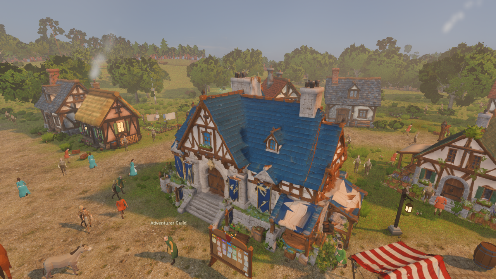
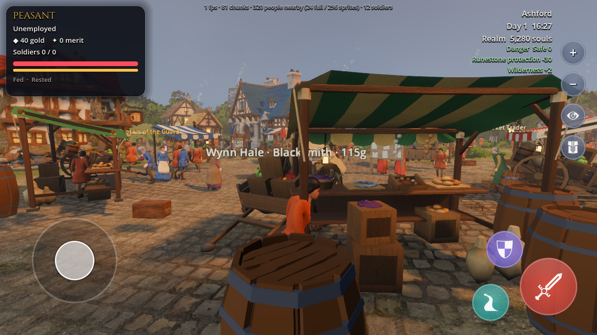
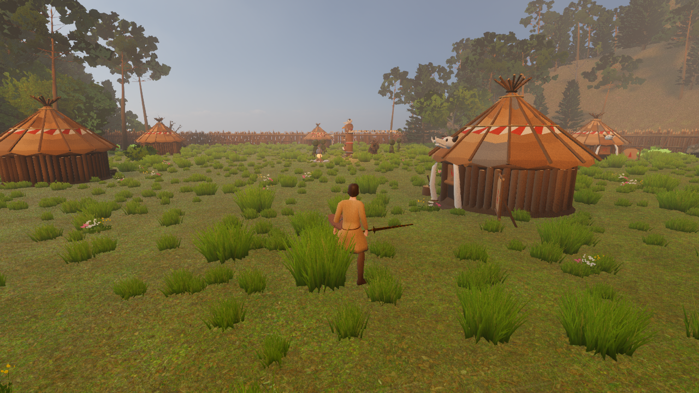
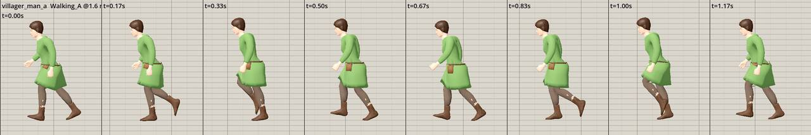
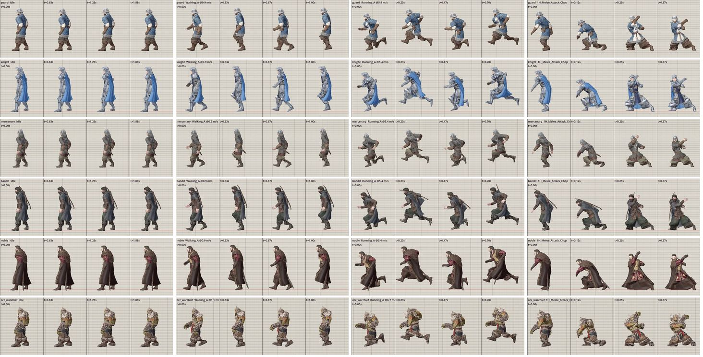
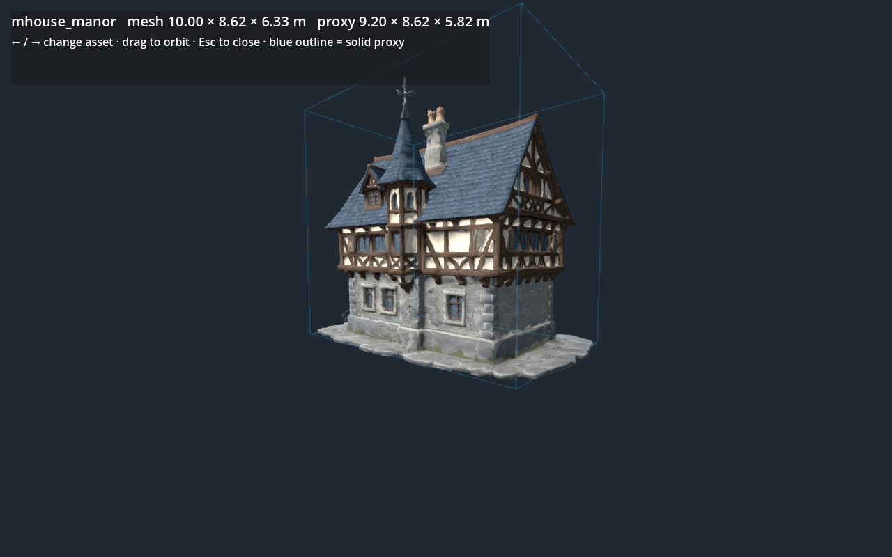
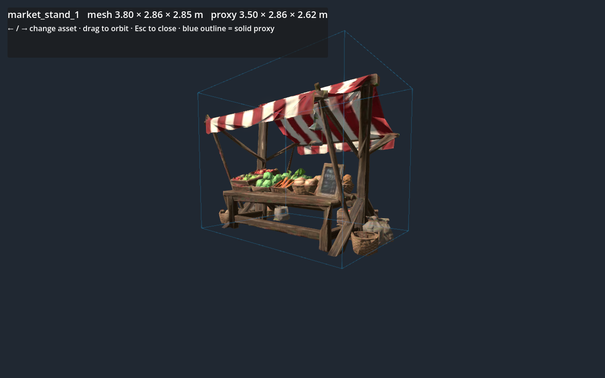

Guildhall and market lane
Busy, detailed setting. Review sightlines and keep the main walking route clear of crates, stalls and overlapping name labels.
Current world stillCrowd and lane readabilityA visual handoff for Claude: keep the existing world, improve movement, animation, collision and daily life in small steps. These stills show the current art direction; they are not proof of live animation or collision behavior.
Animation calibration pass recorded · live play review pending
Busy, detailed setting. Review sightlines and keep the main walking route clear of crates, stalls and overlapping name labels.
Current world stillCrowd and lane readability
Existing environment reference. Camera clearance through foliage and signs of wildlife or activity need live review.
Current world stillCamera and ambient life
Existing encounter reference. Check enemy spacing, readable intent, solid world boundaries and combat timing during play.
Current world stillRuntime behavior reviewTarget architecture: nearby characters use collision and yielding; far residents stay simulation-driven. Use explicit building and prop proxies, plus intentional door openings. This drawing is a design diagram, not a captured gameplay frame.
Near physicsFar crowd LODVerify in a live play sessionThe existing animation QA runner now checks runtime playback-rate calibration. The sample strip below shows the villager walk at its current movement speed and animation rate. These posed frames inspect motion timing; they do not prove that traversal, collision, or camera behavior feels right in the level.

Eight sampled frames from the current walk clip, played at the current villager rate. This helps review stride and foot travel.
Read the full QA report · Read the focused check
Existing QA contact sheet. Foot-slide fixes must be checked against game movement speed and play feel.
Open the QA tool and instructionsThese images use the game's production building loader and static box proxies. A blue wireframe marks the solid collision volume. Review the full gallery for Meshy houses, hero buildings, stalls and landmarks.

The current proxy follows the model's overall bounds. Door gaps and irregular outlines need in-game checks.
Open the complete collider gallery · Run the viewer
The box includes the awning and baskets; check whether the solid footprint leaves enough room around the market lane.
Open the complete collider gallery